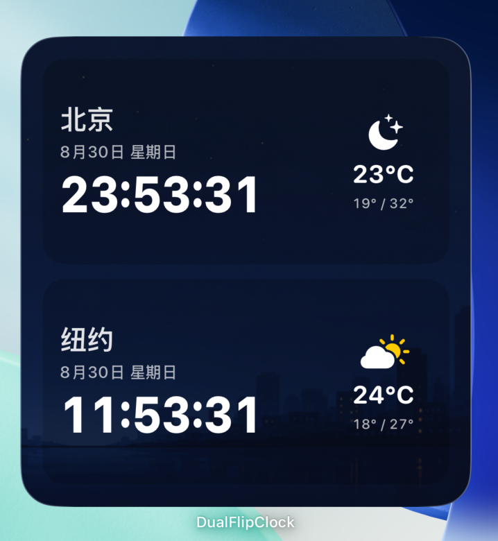

A SMALL STUDIO OF TIME
让时间，
各有其美。Make room
for time.
连接远方，让时间成为风景，
或留一点专注，给此刻的自己。Connect distant places. Watch time come to life.
Or find a little focus in the here and now.
三款独立 App · 由 Lu Lin 设计Three independent apps · Designed by Lu Lin
找到你的时间方式Find your kind of time
THE COLLECTION — 01–03
01 / CONNECT

两个地方，同一刻。Two places. One moment.Dual Flip Clock
双城时钟Dual Flip Clock
把两座城市的时间、天气与牵挂，放在同一块屏幕上。The time, weather and people you care about, in two cities on one screen.
探索这款时钟Explore this clock ↗
02 / PLAY
让每一分钟，都有看头。A little wonder, every minute.
needless clock
无事钟needless clock
汽车、蚂蚁、鱼群与飞鸟。十二个会动的世界，让时间成为桌面上的风景。Cars, ants, fish and birds. Twelve animated worlds turn time into a living scene on your desk.
探索这款时钟Explore this clock ↗
03 / FOCUS
 少一点打扰，多一点专注。Less noise. More now.
少一点打扰，多一点专注。Less noise. More now.
PlainTick Flip Clock
简刻PlainTick
安静的翻页时钟，配上计时器、番茄钟与桌面小组件，专注每一刻。A quiet flip clock with timers, Pomodoro focus tools and Home Screen widgets. Make every moment yours.
探索这款时钟Explore this clock ↗